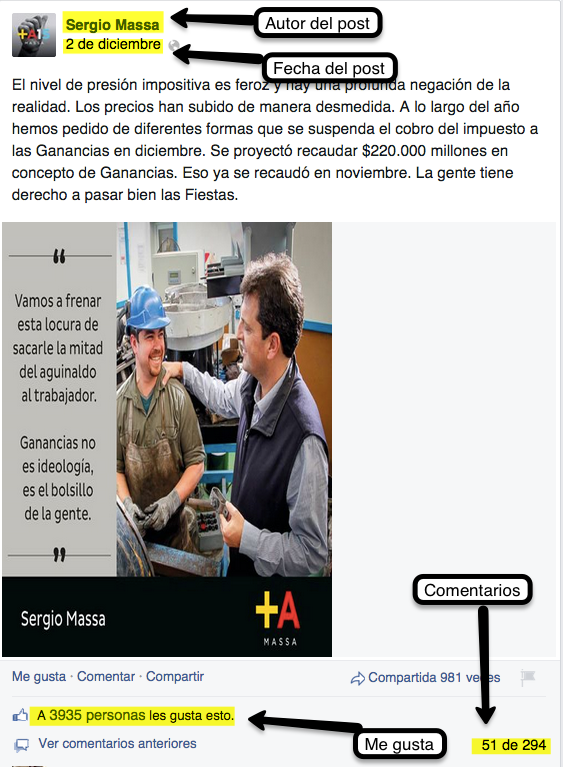

Bienvenidos
Prisma - Net
{? }

- Integrantes:
-
- Oscar Cáceres Paredes
- Santiago Donikian
- Tutor:
-
- M. Ing. Eduardo Diez
Prisma - Net
en tiempo real
Contexto

Información obtenida de Twitter


Información obtenida de Twitter

Información obtenida de Facebook
¿Como Funciona?
Arquitectura
Implementación
Demo
Prisma - Net
Comercializacion
Prisma - Net